Купить билетБотанический сад Петра Великого
Старейший ботанический сад Петербурга—
оранжереи, маршруты и интерактивная карта сада.

Сад звучит тише, чем город.
Выберите, как начать прогулку.

Купить билетСтарейший ботанический сад Петербурга—
оранжереи, маршруты и интерактивная карта сада.
Сад звучит тише, чем город.
Выберите, как начать прогулку.